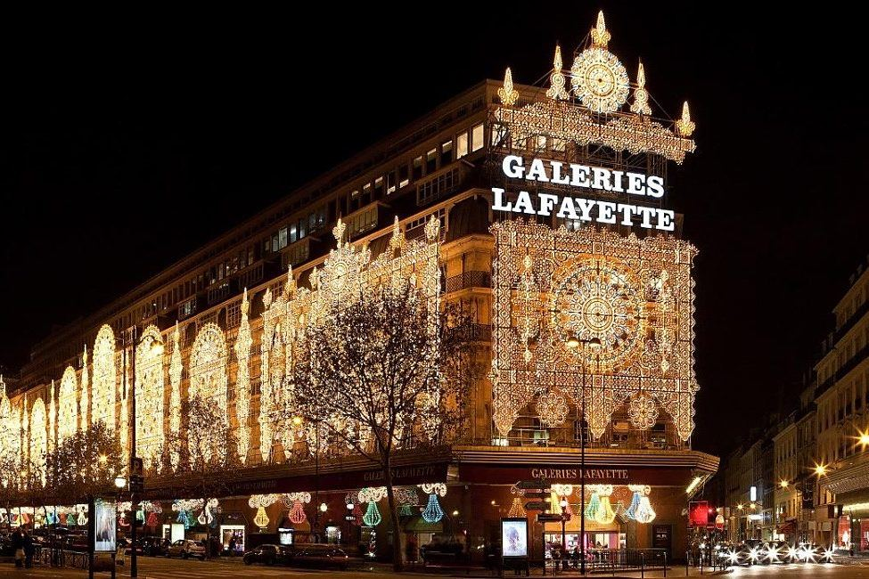
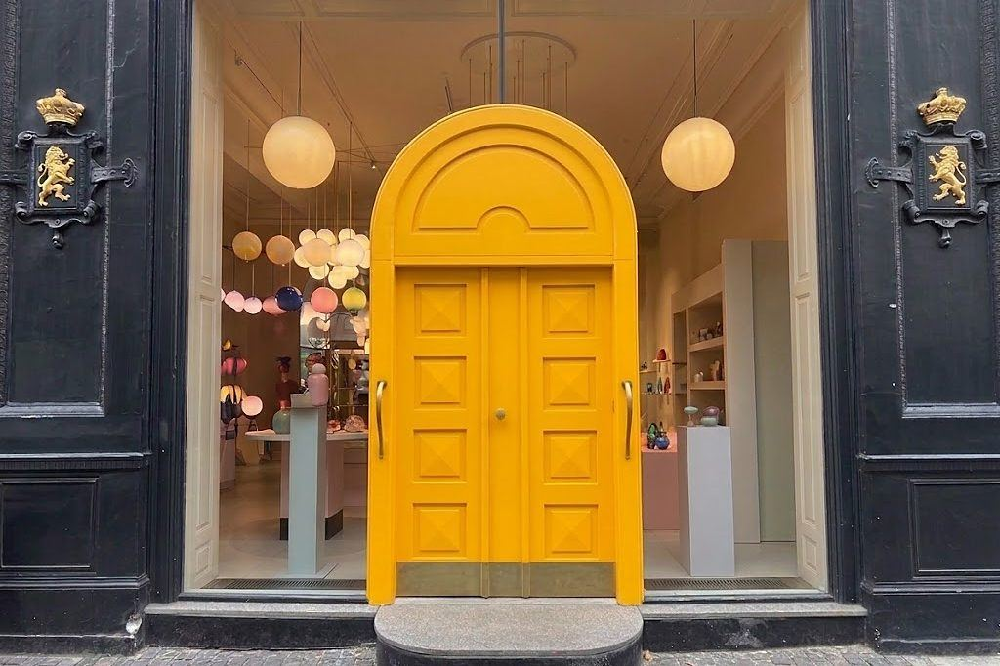
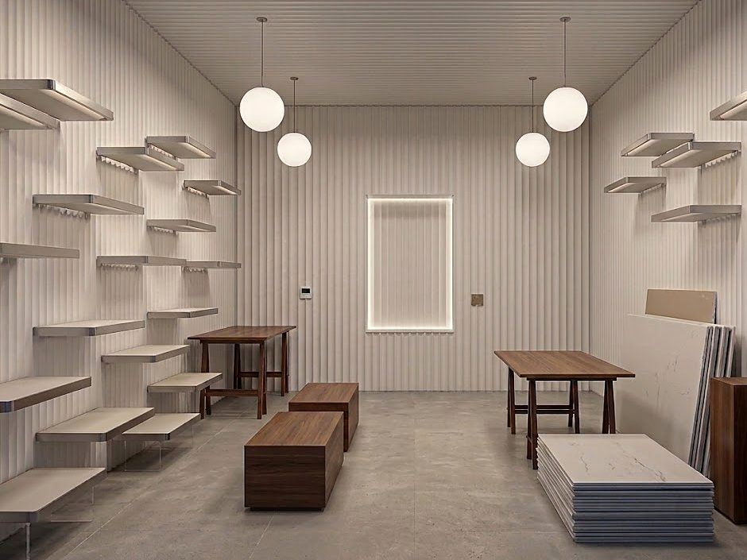

Journal
Notes de terrain.
Quinze ans dans les grandes maisons, une fois qu'on prend le temps de les écrire.

Haussmann ou hygge ? Deux façons d'éclairer une vitrine
Dans les années 2000, Paris éclairait ses vitrines comme un spectacle. Copenhague, comme une invitation à entrer. Une série sur la lumière en boutique entre la France et le Danemark.
Lire l'épisode →Le storytelling dans le luxe : l'histoire est dans l'objet
Dans les grandes maisons, le storytelling n'est pas un texte de campagne. C'est le savoir-faire qui donne son histoire à un objet, en une minute, face au client.
Lire l'article →
Ce que les grandes maisons savent de l'accueil d'un client
Les trente premières secondes d'une visite en boutique sont une chorégraphie. La plupart des marques les laissent au hasard. Les grandes maisons les écrivent.
Lire l'article →
Cinquante ouvertures plus tard : ce qui se joue le jour J
Une ouverture n'échoue pas le jour de l'ouverture. Elle échoue six semaines avant, dans un brief que personne n'a écrit et une livraison que personne n'a suivie.
Lire l'article →Vous voulez voir ça sur votre terrain ?
Parlez-nous de vos boutiques et de vos marchés. Vous aurez une réponse franche sur ce que nous pouvons apporter.
Prendre rendez-vous